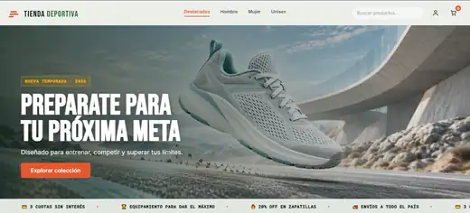

PROYECTO DEMOSTRATIVO
Tienda Deportiva · E-Commerce
Una tienda para explorar productos y organizar una compra desde una sola interfaz.
Mi trabajo: desarrollo del catálogo con búsqueda y filtros, carrito persistente e integración de usuarios, historial de compras y Mercado Pago mediante servicios de backend.
Demo para explorar el catálogo y el carrito. No realices compras desde esta muestra.